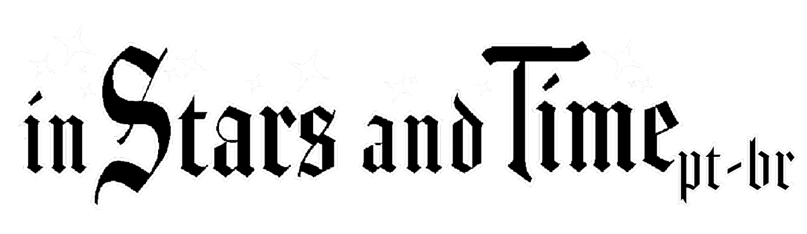

In Stars and Time é um RPG de aventura com mecânica de loop temporal, desenvolvido pela insertdisc5 e publicado pela Armor Games Studios. Lançado em 20 de novembro de 2023. Após um encontro desconfortavelmente próximo com uma armadilha, o líder do grupo, Siffrin, descobre que eles estão presos em um loop temporal, capazes de recomeçar o dia sem que ninguém perceba. Mas o que parecia um truque útil para garantir a vitória rapidamente começa a pegar sobre Siffrin, à medida que ele vivencia o loop repetidamente, sem fim à vista. Relutante em se abrir com seus amigos e companheiros, e com o peso literal do mundo sobre seus ombros, será que Siffrin conseguirá encontrar uma maneira de quebrar o loop antes que ele o quebre?.


ISAT
NOVIDADES

Felyzito 01/01/2026
DEV LOG EM PRODUÇÃO Estamos preparando um novo Dev Log para compartilhar tudo o que vem sendo desenvolvido! Nele, mostraremos a trajetoria do projeto jutamente com os bastidores do projeto. Ainda Em breve, o Dev Log será publicado com todos os detalhes. Fiquem de olho!
#ISAT PT-BR